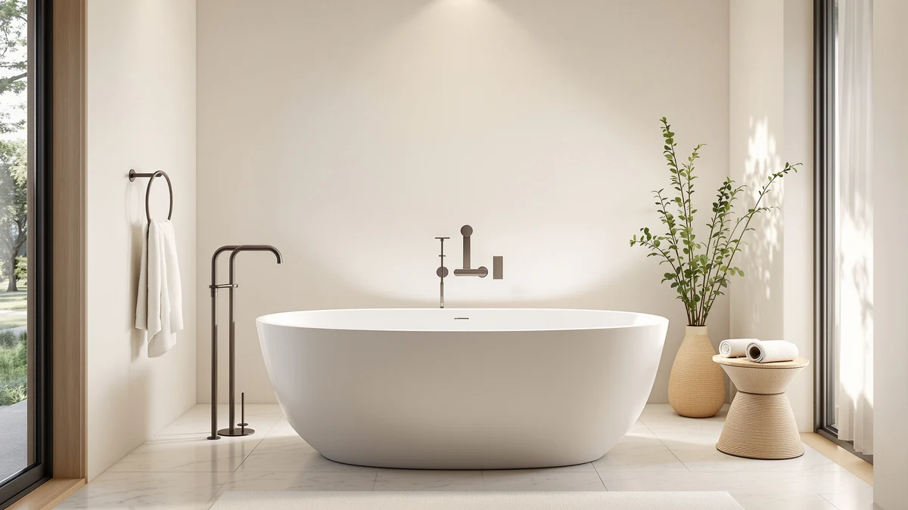

Quick Answer
The best bathtub for small spaces is the EliteEdge Freestanding Bathtub 59 Inch Acrylic, which fits most compact bathrooms while still holding a real, ergonomic soaking depth. If your room is even tighter, the 49-inch Garvee or the foldable ROUSKY tub trade a little comfort for a smaller footprint.
Our pick: Freestanding Bathtub 59 inch Acrylic, $679.99 Check Price on Amazon
Bottom line: our top pick is the Freestanding Bathtub 59 inch Acrylic Free Standing Tub 59 Inch at $679.99. The best budget option is the Extra Large Foldable Bathtub for Adults at $65.99.
Things to Know Before You Buy
- Exterior length is not the same as usable soaking space. Two 59-inch tubs can have different interior depths, so check the specs sheet rather than assuming shorter always means shallower.
- Measure the doorway and hallway before the bathroom. A 67-inch tub might clear your bathroom floor plan but not the turn getting it there. Foldable models like the ROUSKY sidestep this problem entirely.
- The faucet is sold separately on each acrylic tub here. Budget an extra $150 to $400 for a floor-mount tub filler, since the freestanding tubs on this list ship with drain and overflow hardware only.
- A foldable tub is a real alternative for a tight bathroom. Renters and small apartments without room for a permanent fixture can get a real soak from the ROUSKY and store it flat afterward.
- Drain placement has to match your existing plumbing. Center-drain freestanding tubs are the most common configuration in this list and the easiest to retrofit into a small bathroom's existing rough-in.
Finding a bathtub for small spaces usually means giving up on a real freestanding soak and settling for an alcove tub-shower combo instead. It does not have to. The seven tubs below range from a compact 49 inches up to 67 inches, cover acrylic and foldable construction, and were chosen specifically because they fit rooms where a standard 72-inch tub never would.
Our pick for most readers is the EliteEdge Freestanding Bathtub 59 Inch Acrylic. At 59 inches it clears most small-bathroom doorways and floor plans, and the double-wall insulated shell and reclined backrest keep the soak comfortable instead of cramped. If your bathroom is smaller still, the 49-inch Garvee shaves another 10 inches off the footprint, and the ROUSKY foldable tub solves the problem for renters and apartments with no room for a permanent fixture at all.
Below we explain how we picked and compared these seven tubs, then walk through each one: what bathroom it actually suits, its price, and its honest drawbacks. For most people, the verdict on the best bathtub for small spaces comes down to the EliteEdge 59-inch acrylic tub, and everything else on this list is a variation for a slightly different room or budget.
Why You Should Trust Us
This guide is written and maintained by Ilane Tall, who runs a network of bathroom-focused review sites and spends her time comparing fixtures on the specs that predict real-world satisfaction rather than on marketing copy. We do not run a fake testing lab and we did not install seven tubs in a warehouse. Instead, we read every spec sheet, cross-check exterior length against interior soaking dimensions, compare materials and drain hardware, and read verified owner reviews for the complaints that only surface after installation. For a small-space roundup that means paying close attention to the numbers sellers tend to bury: true footprint, wall thickness, and whether the tub can physically get through a standard door. Our Amazon commissions never change a ranking.
How We Picked
We started from the broader freestanding tub market and filtered down to models with an exterior length of 67 inches or less, since that is roughly the ceiling for a tub that still leaves walk-around space in a small bathroom. We required acrylic or another durable soaking-tub material, included overflow and drain hardware where applicable, and a certification such as cUPC where the maker provides one. We also added one foldable option because a portable bathtub for small spaces solves a footprint problem that no rigid acrylic shell can. We then compared what was left on the trade-off that defines this category: how much soaking depth and comfort each tub keeps despite its reduced length.
How We Compared
Because a small-space tub lives or dies on measurements, our comparison is built around them. For each product we recorded exterior length and width, material and wall construction, drain and overflow hardware, and price, then weighed those numbers against the small bathrooms and narrow doorways most buyers describe. We paid particular attention to the gap between a tub that is short because it is built compact and one that is short because it is also shallow. We read verified owner reviews for the issues that surface only after a tub is wedged into a tight room: insufficient clearance to clean behind it, glossy finishes that show water spots fast, and drains that do not line up with existing plumbing. Those practical details, more than finish or brand name, separated our picks.
Our Picks

Freestanding Bathtub 59 inch Acrylic
What we like
- 59-inch length fits bathrooms where a standard 67 to 72-inch tub will not
- Double-wall insulation keeps bathwater warm longer than a single-shell acrylic tub
- Reclined ergonomic backrest supports full-body soaking despite the shorter length
- Also sold in a 67-inch size if you later renovate into a larger bathroom
Flaws but not dealbreakers
- Amazon does not publish a review count for this listing yet, so you are relying on the spec sheet more than owner feedback
- Chrome drain and overflow hardware is included, but the floor-mount faucet is a separate purchase
| Material | — |
| Size | 59 Inch |
Most small-bathroom tub searches turn up either a shallow acrylic insert or a tub-shower combo, and the EliteEdge 59-inch is the rare option that gives you a real freestanding soaking tub without the full-size footprint. The double-wall insulated shell holds water temperature longer than a thin single-layer acrylic tub, and the ergonomic backrest is angled to support your spine through a longer soak, which matters more in a compact tub where you cannot simply stretch out to compensate for a shallow profile.
At $679.99 it sits in the middle of this list on price, and that buys you a tub built specifically for the small-bathroom market rather than a scaled-down version of a full-size model. The main trade-off is that Amazon has not accumulated a visible review history for this particular listing, so we compared it on construction and spec sheet rather than a large body of verified feedback. If you want the same footprint with a longer track record of reviews, the IDEALHOUSE 59-inch below is worth cross-checking before you buy.

49 Inch Freestanding Acrylic Bathtub
What we like
- At 49 inches, it is 10 inches shorter than the next-smallest acrylic tub in this roundup
- Double-walled insulation retains water warmth despite the reduced shell size
- Anti-clog drain and overflow hardware included
- Gloss white finish matches most existing bathroom fixtures
Flaws but not dealbreakers
- The most expensive tub in this roundup despite being the shortest, since compact tooling costs more per unit than standard sizes
- A 49-inch interior will feel snug for anyone over about 5'10" stretching out fully
| Material | — |
| Size | 49 Inch |
When a bathroom genuinely cannot take a 59-inch tub, the Garvee 49-inch is the option that still delivers a real freestanding soak rather than forcing you into a shower-only conversion. It is aimed squarely at renovation projects where the footprint is fixed by existing plumbing or wall placement, and the double-walled construction means you are not sacrificing heat retention just because the shell is smaller. The anti-clog drain is a practical detail for a compact tub, since a slow drain is more noticeable in a shorter, narrower basin.
The trade-off is price. At $761.84 this is the priciest tub in the group, which reflects the cost of tooling a genuinely compact acrylic shell rather than trimming a standard mold. It is also the shortest interior here, so a tall bather will sit upright rather than stretched out. For a bathroom where 49 inches is the hard limit, though, there is no other freestanding option on this list that fits.

Extra Large Foldable Bathtub for
What we like
- Opens to 63 x 31.5 x 18.9 inches, large enough for an adult to soak in, then folds flat for storage
- Dual drainage with a side drain plus a bottom drain speeds up emptying before you fold it away
- By far the lowest price in this roundup, at roughly a tenth of the acrylic tubs
- Fits inside an existing shower stall, so no plumbing changes are required
Flaws but not dealbreakers
- Soft-sided material will not match the finish, rigidity, or heat retention of an acrylic freestanding tub
- Needs to be set up and drained each time rather than staying plumbed and ready
| Material | — |
| Size | — |
The ROUSKY exists for a specific problem the other six tubs on this list cannot solve: a bathroom with no floor space for a permanent fixture at all. Fully opened it measures 63 by 31.5 by 18.9 inches, large enough for an adult to actually soak in, and the dual drainage system with both a side hose connection and a bottom drain makes it faster to empty than a typical portable tub before you fold it down. It sets up inside an existing shower stall, so there is no plumbing or installation involved.
What you give up compared to the acrylic tubs here is obvious: a soft-sided, collapsible tub will not hold heat or feel as sturdy as a rigid freestanding shell, and you are setting it up and breaking it down around each bath rather than leaving it plumbed in place. At $65.99, though, it is priced for what it is, a temporary or apartment-friendly solution rather than a permanent fixture, and for renters or space-starved bathrooms it is the only option here that works at all.

67'' Acrylic Freestanding Bathtub Extra-Deep
What we like
- Extra-deep basin gives a shoulder-covering soak that the shorter tubs on this list cannot match
- Double-wall insulation keeps water warm through a longer bath
- High-gloss acrylic reinforced with fiberglass for long-term color retention
- Also available in 59 inches if you decide you need the smaller footprint after all
Flaws but not dealbreakers
- At 67 inches this is the longest tub in the roundup and needs a bathroom that can genuinely fit it, doorway included
- Extra depth means more water to heat and fill, which adds a little to utility costs per bath
| Material | — |
| Size | 67 Inch |
Not every small bathroom is equally cramped, and if yours has a little extra length to give, the IDEALHOUSE 67-inch Extra-Deep trades some of that space for a soaking depth the shorter tubs here cannot offer. The double-wall insulated shell is built the same way as the other IDEALHOUSE and EliteEdge models in this roundup, and the high-gloss acrylic reinforced with fiberglass resists the yellowing that thinner shells develop over a few years of use.
The obvious trade-off is length. At 67 inches this is one of the two longest tubs on this list, so measure your doorway and hallway turns before ordering, not just the bathroom floor space. A deeper tub also holds more water, which means a slightly longer fill time and a small bump in water heating cost per bath compared to the 49 and 59-inch options above. If depth matters more to you than shaving off those last few inches, this is the pick to make.

67" Acrylic Freestanding Bathtub Deep
What we like
- Least expensive tub in the roundup other than the foldable option
- Non-slip surface and cUPC-certified 1.8 GPM anti-clog drain with a built-in hair catcher
- Air-insulated double-wall core is rated to hold heat up to 35 percent longer than a standard single-wall tub
- ADA-compliant clearances noted by the manufacturer, useful if accessibility is a factor
Flaws but not dealbreakers
- At 67 inches it needs the same doorway and hallway clearance check as the Extra-Deep model above
- The lower price reflects a simpler finish than the WOODBRIDGE tub, without the established brand history
| Material | — |
| Size | 67 inch |
If price is the deciding factor once you have settled on a length, the IDEALHOUSE 67-inch Deep is the value pick of this group. The non-slip surface and cUPC-certified drain with an integrated hair catcher are the kind of details that matter daily but rarely show up in marketing photos, and the air-insulated double-wall core is rated to hold heat up to 35 percent longer than a standard tub, which matters most in a small bathroom that tends to lose warmth faster through exterior walls.
It shares the same 67-inch length limitation as the Extra-Deep model above, so the same doorway and hallway measurements apply before you order. At $539.99 it undercuts the WOODBRIDGE tub by roughly $160 for a broadly similar acrylic build, though WOODBRIDGE has a longer track record as a dedicated bathroom-fixture brand. For a small bathroom renovation on a tighter budget, this is the strongest price-to-spec ratio on the list.

WOODBRIDGE 67" Acrylic Freestanding Bathtub
What we like
- WOODBRIDGE is a dedicated bathroom-fixture brand with a longer market history than several other listings here
- Full published dimensions, 67 x 31.5 x 22.8 inches, with a stated 60-gallon effective capacity
- Meets ASTM slip-resistance standards on a smooth, easy-to-clean surface
- Matte black drain and overflow hardware for a more distinctive finish than standard chrome
Flaws but not dealbreakers
- At 67 inches by 31.5 inches wide, it needs a bathroom that can accommodate both dimensions, not just the length
- Priced above the similarly sized IDEALHOUSE 67-inch Deep for a comparable acrylic build
| Material | — |
| Size | 67 Inch |
WOODBRIDGE has been making freestanding tubs longer than most of the newer listings in this category, and it shows in the level of detail published for this model: exact exterior dimensions of 67 by 31.5 by 22.8 inches and an effective 60-gallon capacity, numbers that let you plan a small bathroom layout with more confidence than a vague "large capacity" claim. The 100 percent high-gloss LUCITE acrylic shell is reinforced with Ashland resin and fiberglass, and the surface meets ASTM slip-resistance standards while staying easy to clean.
The matte black drain and overflow give it a different look than the chrome hardware on the other tubs here, which is worth factoring in if you are matching fixtures elsewhere in the room. At $699.00 it costs more than the similarly sized IDEALHOUSE 67-inch Deep, and you are paying partly for brand history and documentation rather than a meaningfully different soaking experience. For buyers who weigh brand reputation heavily, that premium is easy to justify.

59 Inch Acrylic Freestanding Bathtub
What we like
- 4mm-thick high-gloss acrylic, thicker than a typical entry-level shell, for added durability
- Non-slip base and cUPC-certified anti-clog drain with an integrated hair catcher
- Air-insulated double-wall core rated to hold heat up to 35 percent longer than a standard tub
- Same 59-inch small-bathroom footprint as our top pick, giving you a second option at that size
Flaws but not dealbreakers
- Priced close to the EliteEdge top pick without a clear feature advantage over it
- Glossy white acrylic will show water spots and needs regular wiping to stay looking new
| Material | — |
| Size | 59 Inch |
The IDEALHOUSE 59-inch is essentially a second take on the same footprint as our top pick, built around a 4mm-thick high-gloss acrylic shell that is noticeably heavier-duty than the thin single-layer acrylic used on some entry-level tubs. The cUPC-certified 1.8 GPM drain with an integrated hair catcher and the non-slip base are the same practical hardware found on the brand's 67-inch models, scaled down to the compact size.
At $694.83 it lands within $15 of the EliteEdge top pick, so the decision between the two mostly comes down to finish preference and which listing has more recent verified reviews at the time you buy. Like the other IDEALHOUSE tubs in this roundup, the double-wall air-insulated core is rated to retain heat up to 35 percent longer than a standard single-wall tub, a genuine advantage in a small bathroom that loses warmth faster through its walls. If the EliteEdge is out of stock or priced higher when you check, this is the closest substitute at the same size.
Quick Comparison
| Product | Material | Price | Rating | Best for | Get it |
|---|---|---|---|---|---|
| Freestanding Bathtub 59 inch Acrylic | — | $679.99 | 4 | Best overall for small bathrooms | View on Amazon → |
| 49 Inch Freestanding Acrylic Bathtub | — | $761.84 | 4 | Tightest bathroom footprints | View on Amazon → |
| Extra Large Foldable Bathtub for | — | $65.99 | 4 | Renters and no permanent tub option | View on Amazon → |
| 67'' Acrylic Freestanding Bathtub Extra-Deep | — | $649.99 | 4 | Extra soaking depth if space allows | View on Amazon → |
| 67" Acrylic Freestanding Bathtub Deep | — | $539.99 | 4 | Best value at 67 inches | View on Amazon → |
| WOODBRIDGE 67" Acrylic Freestanding Bathtub | — | $699.00 | 4 | Established brand, full published specs | View on Amazon → |
| 59 Inch Acrylic Freestanding Bathtub | — | $694.83 | 4 | Thicker shell at the same footprint | View on Amazon → |
The Competition
Searching for a bathtub for small spaces turns up a lot of options that do not belong on this list. Several sub-$300 acrylic tubs marketed as "compact" or "small bathroom" listings turned out to use a single thin shell with no insulation layer, which cools fast and flexes underfoot in a way a double-wall tub does not. We passed on those because a small tub that cannot hold its own heat is a worse trade than a slightly larger one that can.
We also looked at several 71 and 72-inch acrylic and whirlpool tubs that show up in "small bathroom" search results simply because they are cheaper than a full custom installation. Once you account for doorway clearance and the walk-around space needed to clean behind them, tubs that long need a mid-size bathroom at minimum. If your room can genuinely fit one, our full best freestanding bathtubs roundup covers those larger options in more depth. Here we held the line at 67 inches and prioritized tubs with published, verifiable dimensions over ones that only listed vague exterior measurements.
Frequently Asked Questions
What size tub actually fits a small bathroom?
Most small bathrooms can take a 59-inch freestanding tub, and a 49-inch model or a foldable tub will fit rooms that cannot. Measure the doorway and hallway turns first, since a 67-inch tub is manageable in a small room but hard to carry in through a tight hallway.
Does a shorter tub mean a shallower soak?
Not necessarily. Length and water depth are separate specs. The 49-inch Garvee and the 59-inch IDEALHOUSE and EliteEdge tubs all use double-wall acrylic shells built for a deep soak despite the short footprint, so check the stated depth rather than assuming a compact tub is shallow.
Is a foldable bathtub a good option for a small space?
A foldable bathtub for small spaces, like the ROUSKY, is worth considering if you rent, lack floor space for a permanent fixture, or want to store the tub when it is not in use. It will not match the finish or heat retention of an acrylic freestanding tub, but it solves a footprint problem nothing else does.